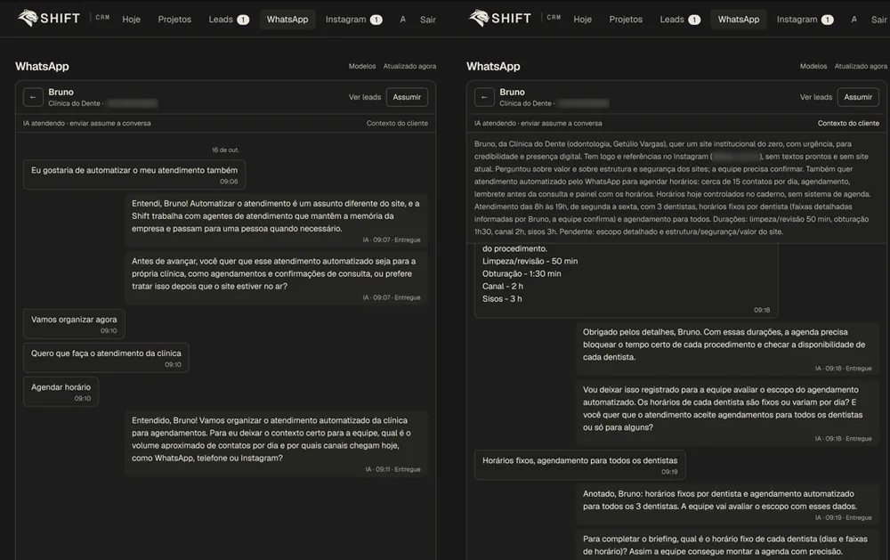
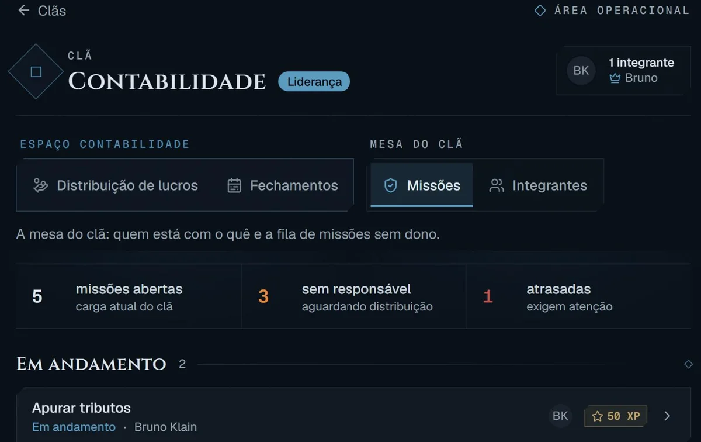
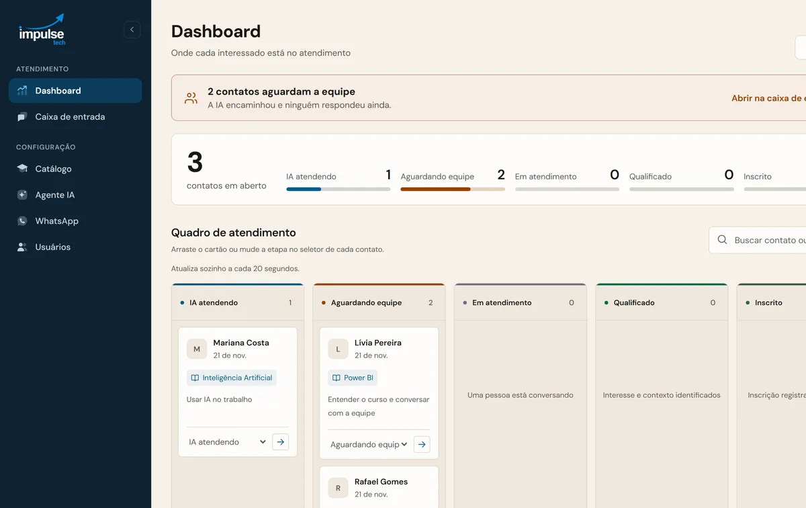
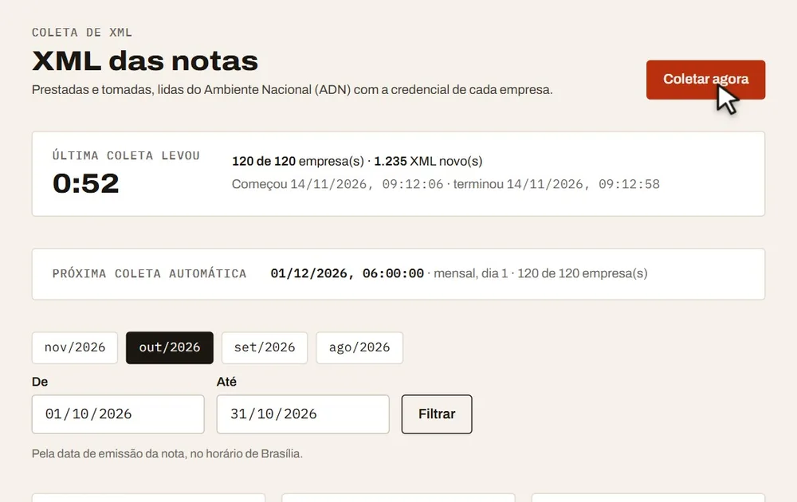

Sistemas, agentes de IA e sites que já estão rodando. Em cada um: o problema, o que construímos e como funciona.
Sistemas e agentes de IA

17 stempo de resposta do agente no WhatsApp · medição do CRM, out/2026
01 / Sistema próprio
Shift CRM
Lead chegando pelo WhatsApp e pelo Instagram, projetos de cliente em andamento e posts para publicar: tudo em lugares diferentes.
Construímos o nosso próprio CRM e usamos ele todos os dias. Ele junta atendimento, vendas e marketing, ligado às APIs oficiais da Meta. A SHIFT é aprovada pela Meta como provedora de tecnologia do WhatsApp.
Como funciona
WhatsApp oficial: um agente de IA responde, entende o negócio da pessoa e passa a conversa para a equipe na hora certa. Se alguém responde pelo celular, a IA pausa sozinha.
Instagram: quem comenta a palavra do post recebe a mensagem no Direct em segundos, e o comentário é respondido.
Publicações: os posts entram numa fila e só vão ao ar depois de aprovados.
Projetos: cada cliente tem etapas e tarefas, atualizadas também pelos agentes de IA que trabalham nos projetos.

1 sistemapara todos os setores e processos do escritório
02 / Escritório contábil
Guilda
Num escritório com cerca de 250 empresas-cliente, o trabalho passava de mão em mão entre setores e ninguém sabia em que pé estava cada processo.
Para a Scharff Contabilidade, construímos a Guilda: um ecossistema que integra a gestão de todos os processos do escritório, do pedido do cliente à entrega de cada setor. Agora estamos colocando a inteligência artificial no atendimento.
Como funciona
Controle de missões: cada tarefa tem dono e prazo e passa de um setor para o outro. Dá para ver como está cada setor sem perguntar a ninguém.
Processos de ponta a ponta: um pedido do cliente, como abrir ou alterar uma empresa, vira as missões certas em cada setor.
Avisos à equipe: o atendente é avisado quando chega uma tarefa para ele.
Equipe engajada: as missões concluídas viram pontos e níveis para cada pessoa.
Em implantação, IA no atendimento: a inteligência artificial faz a triagem dos clientes que chamam o escritório e leva cada pedido para o setor certo.

24 hpor dia, o agente faz a triagem de quem chama no WhatsApp, mesmo com o dono em aula
03 / Educação em IA
Impulse
Os interessados nos cursos chegavam pelo WhatsApp a qualquer hora, e o dono atende pelo celular, entre uma aula e outra.
Para a Impulse Tech, construímos um CRM próprio com um agente de IA no WhatsApp oficial. Ele faz a triagem de cada contato e só chama o dono quando é a hora dele entrar.
Como funciona
Triagem: o agente responde com base no catálogo de cursos aprovado e preenche a ficha do interessado durante a conversa.
Limites claros: desconto ou condição fora do catálogo é barrado no próprio sistema, não só nas instruções da IA.
Aviso ao dono: com a triagem pronta ou um pedido de matrícula, o dono recebe um aviso no WhatsApp.
Atendimento pelo celular: a equipe continua no WhatsApp Business do celular, e o CRM acompanha tudo.
Painel: funil por etapas, caixa de entrada e um laboratório para testar o agente antes de mudar qualquer resposta.

52 spara coletar 1.235 XML de notas de 120 empresas · medição real
04 / Produto SHIFT · SaaS
Tero
Escritórios emitem nota de serviço por dezenas de empresas, cada uma com seu acesso, e baixam os XML um por um todo mês.
O Tero é o nosso SaaS para escritórios contábeis, por assinatura. Ele emite NFS-e e coleta os XML pela API nacional, para todas as empresas da carteira.
Como funciona
Um login só: o contador emite por todas as empresas cadastradas, sem trocar de acesso.
Emissão rápida: os dados fiscais vêm do modelo de cada empresa. A cada nota, só mudam tomador, valor e descrição.
XML do período: baixa as notas prestadas e tomadas de todas as empresas, com o nome de arquivo que o escritório quiser. A coleta de 120 empresas, que tomava dias, levou 52 segundos.
Coleta automática: todo mês, no dia marcado, o Tero baixa os XML sozinho.
Certificado: funciona com a procuração do escritório ou com o certificado A1 de cada empresa.
Quem procura um imóvel quer saber com quem vai negociar antes de olhar a lista.
O site do corretor Beto Galina, em Getúlio Vargas, coloca ele em primeiro plano: quem é, como atende e um caminho direto para a conversa no WhatsApp. O catálogo de imóveis à venda está pronto para receber cada anúncio.